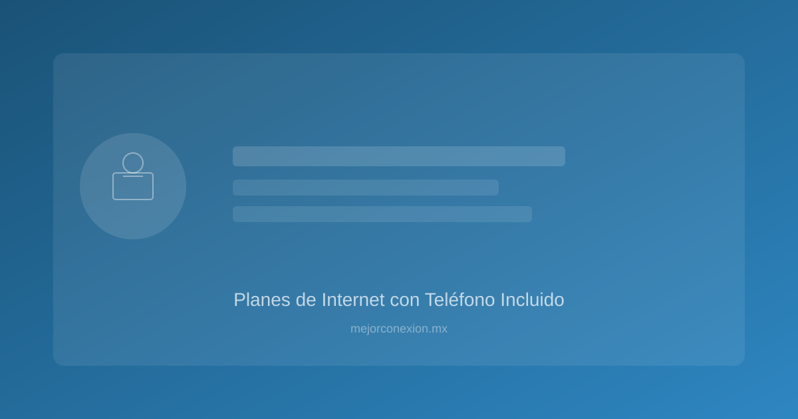

Planes de internet con teléfono incluido: ¿Vale la pena el paquete?
En la era de la hiperconectividad, donde WhatsApp y las llamadas de celular dominan nuestra comunicación, surge una duda razonable para muchos hogares mexicanos: ¿Sigue teniendo sentido pagar por un plan de internet con teléfono fijo incluido?
A primera vista, parece un servicio del pasado. Sin embargo, las grandes operadoras en México (como Telmex, Totalplay e Izzi) siguen ofreciendo paquetes "Triple Play" (Internet + TV + Telefonía) con agresivas estrategias de marketing. En este artículo, analizaremos de forma objetandiva si este combo representa un ahorro real o si simplemente estás pagando por un servicio que terminará guardado en un cajón.
Key Takeaways: Resumen de puntos clave
- Ahorro por consolidación: Los paquetes suelen ser entre un [15% y 25%] más económicos que contratar los servicios por separado.
- El factor seguridad: El teléfono fijo sigue siendo un respaldo vital para sistemas de alarma y para adultos mayores.
- Cuidado con la tecnología: Asegúrate de que el paquete incluya fibra óptica y no tecnología de cobre antigua.
- Perfil de usuario: El paquete es ideal para hogares con adultos mayores o negocios pequeños, pero puede ser un gasto innecesario para usuarios "solo digitales".
- La trampa de la permanencia: Revisa siempre los contratos de permanencia mínima antes de aceptar un combo.
¿Qué son los planes de servicio con internet y teléfono incluido?
Cuando hablamos de "internet con teléfono incluido", nos referimos a la oferta de servicios convergentes. En México, este modelo es el estándar de la industria. Las empresas de telecomunicaciones agrupan la conectividad de banda ancha con la telefonía fija en una sola factura mensual.
Históricamente, estos paquetes se vendían bajo el concepto de Triple Play, que añadía la televisión por cable. Hoy en día, la tendencia se está moviendo hacia el "Double Play" (Internet + Telefonía) para hogares que no requieren televisión, o simplemente paquetes de internet de alta velocidad que incluyen un número fijo como un "extra" de bajo costo.
La evolución de la telefonía fija en el hogar
Ya no se trata de la necesidad de "llamar a la abuela". La telefonía fija moderna en paquetes de internet cumple funciones de infraestructura. El número fijo ahora es un identificador de domicilio y un punto de contacto para servicios de emergencia y trámites gubernamentales.
Ventajas de contratar un paquete de servicios (El lado positivo)
No todo es gasto innecesario. Existen razones técnicas y económicas muy sólidas para optar por un paquete combinado.
1. Reducción de la factura mensual (Economía de escala)
La razón principal es el costo. Para los proveedores, es más rentable mantener un cliente con tres servicios que uno con uno solo. Esta eficiencia se traslada al consumidor en forma de descuentos. Si sumas el costo de un plan de internet de 100 Mbps más un plan de telefonía independiente, el total casi siempre superará el precio del paquete combo.
###
2. Gestión simplificada y facturación única
Uno de los mayores dolores de cabeza en la administración del hogar es la dispersión de pagos. Al tener internet con teléfono incluido, te enfrentas a:
- Un solo vencimiento: Evitas recargos por olvidos en fechas distintas.
- Un solo interlocutor: Si hay una falla en la línea, solo haces una llamada a un centro de atención.
- Un solo comprobante: Útil para comprobantes de domicilio y trámites legales.
3. Respaldo en emergencias y seguridad
Aunque parezca una idea obsoleta, la telefonía fija tiene una ventaja en situaciones críticas. En algunos casos, durante caídas de redes celulares por saturación o desastres naturales, las líneas fijas (especialmente si están integradas a la infraestructura de fibra óptica con respaldo de energía) pueden mantener una comunicación más estable. Además, la mayoría de los sistemas de alarma para el hogar en México requieren una línea fija para reportar intrusiones.
/blog/fibra-optica-vs-cable-mexico.html
Desventajas y costos ocultos (El lado crítico)
Antes de firmar el contrato, es vital analizar qué estás pagando realmente.
1. El pago por un servicio subutilizado
Si tu familia solo utiliza WhatsApp, Telegram y llamadas de celular, el costo extra del teléfono fijo es, en esencia, "dinero tirado". Aunque el paquete sea más barato que la suma de partes, si el componente de telefonía no te aporta valor, estás incrementando tu gasto mensual sin beneficio tangible.
2. Falta de flexibilidad y contratos de permanencia
Muchos paquetes atractivos vienen ligados a contratos de 12 o 18 meses. Si decides cambiar de proveedor porque encontraste una mejor oferta de internet puro, podrías enfrentar penalizaciones por cancelar el servicio de telefonía asociado.
3. El riesgo de la tecnología obsoleta
[VERIFY] Algunos proveedores aún ofrecen paquetes de internet con telefonía que utilizan tecnología ADSL (cobre) en ciertas regiones de México. Esto es un error grave para el usuario moderno. La telefonía fija debe viajar por la misma red de fibra óptica que tu internet para garantizar velocidades simétricas y estabilidad. Si el paquete incluye telefonía pero te limita la velocidad de internet, huye de esa oferta.
Comparativa: Internet Solo vs. Internet + Teléfono
Para ayudarte a decidir, desglosamos los escenarios más comunes en el mercado mexicano actual.
| Caracteración | Plan Solo Internet | Plan Internet + Teléfono |
|---|---|---|
| :--- | :--- | :--- |
| Ideal para... | Jóvenes, estudiantes, usuarios 100% móviles. | Familias, adultos mayores, negocios, sistemas de seguridad. |
| Costo Mensual | Base (puedes encontrar ofertas muy agresivas). | Ligeramente superior, pero con mayor valor agregado. |
| Complejidad de Pago | Baja. | Muy baja (un solo recibo). |
| Uso de Recursos | Enfocado solo en ancho de banda. | Aprovecha la infraestructura de red existente. |
| Respaldo de Emergencia | Nulo (dependes de tu celular). | Alto (línea dedicada para emergencias). |
¿Para quién sigue siendo útil el teléfono fijo en México?
Para decidir si el paquete es para ti, identifica en qué grupo te encuentras:
Perfil A: El Hogar con Adultos Mayores
Para las generaciones que crecieron con el teléfono fijo, tener un número de casa es sinónimo de estabilidad. Además, es mucho más fácil para ellos operar un teléfono físico que navegar en interfaces de aplicaciones móviles complejas.
Perfil B: Pequeños Negocios y Home Office
Si trabajas desde casa o tienes un pequeño comercio, un número fijo que sea "internet con teléfono incluido" aporta una capa de profesionalismo. Tener un número que no sea un celular personal permite separar la vida laboral de la privada y facilita la creación de perfiles en Google Business.
Perfil C: Usuarios de Seguridad Residencial
Si tienes cámaras de vigilancia o sensores de movimiento, la integración de la telefonía fija es clave. Muchos servicios de monitoreo en México (como los de empresas de seguridad privada) utilizan la línea fija como el canal primario de notificación de alertas.
Checklist para elegir tu próximo plan de internet
Si estás listo para contratar, no te dejes llevar solo por el precio. Sigue estos pasos:
- Verifica la tecnología de entrega: Pregunta directamente: ¿Es fibra óptica pura hasta mi casa? No aceptes híbridos de cobre si buscas alta velocidad.
- Analiza tu consumo de llamadas: Si el paquete incluye "llamadas ilimitadas", revisa si son nacionales o incluyen Estados Unidos/Canadá, ya que esto puede variar el precio.
- [VERIFY] Los precios de los paquetes pueden variar entre $350 y $700 MXN dependiendo de la velocidad contratada.
- Revisa la velocidad de subida (Upload): En México, muchos planes de cable ofrecen mucha bajada pero muy poca subida. Para videollamadas de Zoom o subir videos a YouTube, necesitas una subida robusta.
- Consulta la cobertura en tu zona: Un excelente plan no sirve de nada si en tu colonia la señal es inestable. Consulta las comparativas de mejor-internet-casa-mexico-2026.html para ver qué proveedores tienen mejor reputación en tu área.
- Pregunta por el costo de instalación: A veces el paquete es barato, pero la instalación y el alquiler del módem (ONT) se cobran por separado y pueden inflar tu primera factura.
Preguntas Frecuentes (FAQ)
1. ¿Si contrato internet con teléfono incluido, puedo usar WhatsApp en mi celular?
¡Por supuesto! El plan de internet es para tu hogar (vía Wi-Fi) y no afecta el funcionamiento de tus datos móviles. De hecho, tener un buen internet en casa es lo que te permitirá usar WhatsApp, Netflix y redes sociales sin consumir tus megas de celular.
2. ¿Qué pasa si el internet se cae, sigue funcionando el teléfono?
Esto depende totalmente de la tecnología. Si el servicio es de fibra óptica, la telefonía viaja por la misma red de datos. Si hay un corte de fibra, ambos servicios podrían caerse. Sin embargo, si la falla es de configuración de router, la línea telefónica suele ser más resistente.
3. ¿Es más caro contratar el teléfono por separado?
Generalmente, sí. Los proveedores de servicios en México utilizan la telefonía como un "gancho" para aumentar el ticket promedio. El costo de añadir la telefonía al paquete de internet suele ser significativamente menor que contratar un servicio de telefonía independiente.
4. ¿Puedo cancelar solo el servicio de teléfono y quedarme con el internet?
Depende de las cláusulas de tu contrato. Muchos paquetes "Combo" están diseñados como una unidad. Si intentas desglosarlos, el proveedor podría reajustar el precio del internet al precio "estándar" (más caro) o exigirte el cumplimiento de la permanencia.
Conclusión: El veredicto final
¿Vale la pena el paquete de internet con teléfono incluido?
La respuesta corta es SÍ, siempre y cuando se cumplan dos condiciones: que la tecnología sea fibra óptica y que el costo adicional por la telefonía sea mínimo o esté integrado en un ahorro real de tu factura mensual.
Si eres un usuario joven que solo vive de la nube y el móvil, busca un plan de internet puro y potente. Pero si eres el administrador de un hogar con diversas necesidades, o tienes un negocio que requiere una presencia formal, el paquete combo es una herramienta de ahorro, orden y seguridad que no deberías ignorar.
¿Buscas la mejor conexión para tu hogar en México? No tomes una decisión a ciegas. En MejorConexión.mx te ayudamos a comparar las velocidades, coberturas y precios reales de los proveedores en tu zona.
👉 ¡Compara los mejores planes de internet aquí y ahorra hoy mismo!